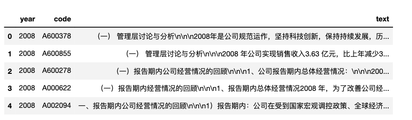

相关内容
- LIST | 社科(经管)文本挖掘文献汇总
- LIST | 文本分析代码汇总
- LIST | 可供社科(经管)领域使用的数据集
- Python实证指标构建与文本分析
- 使用3751w专利申请数据集按年份(按省份)训练词向量
- 预训练模型 | 使用1000w专利摘要训练word2vec模型，可用于开发词典
相关文献
[0]刘景江,郑畅然,洪永淼.机器学习如何赋能管理学研究？——国内外前沿综述和未来展望[J].管理世界,2023,39(09):191-216.
[1]冉雅璇,李志强,刘佳妮,张逸石.大数据时代下社会科学研究方法的拓展——基于词嵌入技术的文本分析的应用[J].南开管理评论:1-27.
[3]胡楠,薛付婧,王昊楠.管理者短视主义影响企业长期投资吗？——基于文本分析和机器学习[J].管理世界,2021,37(05):139-156+11+19-21.
[4]Kai Li, Feng Mai, Rui Shen, Xinyan Yan, Measuring Corporate Culture Using Machine Learning, *The Review of Financial Studies*,2020
一、训练
1.1 导入mda数据
读取 数据集 | 2001-2022年A股上市公司年报&管理层讨论与分析
import pandas as pd
df = pd.read_excel('mda01-22.csv.gz', compression='gzip')
#gz解压后读取csv
#df = pd.read_excel('mda01-22.csv')
print(len(df))
df.head()
Run
55439

1.2 构造语料
从 mda01-22.xlsx 数据中抽取出所有文本，写入到 mda01-22.txt
with open('mda01-22.txt', 'a+', encoding='utf-8') as f:
text = ''.join(df['text'])
f.write(text)
1.3 配置cntext环境
使用2.1.1版本 cntext 库(该版本暂不开源，需付费购买)。 将得到的 cntext-2.1.1-py3-none-any.whl 文件放置于电脑桌面， win系统打开cmd(Mac打开terminal)， 输入如下命令(将工作环境切换至桌面)
cd desktop
个别Win用户如无效，试试cd Desktop 。
继续在cmd (terminal) 中执行如下命令安装cntext2.1.1
pip3 install distinctiveness
pip3 install cntext-2.1.1-py3-none-any.whl
1.4 训练word2vec
设置模型参数配置
- mda01-22 使用2001-2022年度mda数据训练
- 200 嵌入的维度数，即每个词的向量长度是200
- 6 词语上下文的窗口是6
%%time #程序结束后，可查看总的运行时间
import cntext as ct
w2v = ct.W2VModel(corpus_file='mda01-22.txt')
w2v.train(vector_size=200, window_size=6, min_count=6, save_dir='Word2Vec')
Run
Building prefix dict from the default dictionary ...
Start Preprocessing Corpus...
Dumping model to file cache /var/folders/y0/4gqxky0s2t94x1c1qhlwr6100000gn/T/jieba.cache
Loading model cost 0.278 seconds.
Prefix dict has been built successfully.
Start Training! This may take a while. Please be patient...
Training word2vec model took 3532 seconds
Note: The Word2Vec model has been saved to output/Word2Vec
CPU times: user 1h 30min 45s, sys: 30.1 s, total: 1h 31min 15s
Wall time: 58min 57s
经过不到两个小时时间， 训练出的中国A股市场词向量模型(如下截图)，词汇量 914058， 模型文件 1.49G。模型可广泛用于经济管理等领域概念(情感)词典的构建或扩展。
- mda01-22.200.6.bin
- mda01-22.200.6.bin.syn1neg.npy
- mda01-22.200.6.bin.wv.vectors.npy

为什么这样确定200和6，可以看这篇 词嵌入技术在社会科学领域进行数据挖掘常见39个FAQ汇总
二、导入模型
需要用到两个自定义函数load_w2v、expand_dictionary，源代码太长，为了提高阅读体验， 放在文末。大家记得用这两个函数前一定要先导入。点击代码
#先导入load_w2v、expand_dictionary函数源代码
#读取模型文件
w2v_model = load_w2v(w2v_path='Word2Vec/mda01-22.200.6.bin')
w2v_model
Loading word2vec model...
<gensim.models.word2vec.Word2Vec at 0x310dd9990>
注意
之前购买过mda01-22.100.6.bin的可以留意下， <gensim.models.word2vec.Word2Vec>和<gensim.models.keyedvectors.KeyedVectors> 是有区别的。
三、w2v_model的使用
- 查看词汇量
- 查询某词向量
- 查看多个词的均值向量
更多内容，建议查看下gensim库的文档
#词汇量
len(w2v_model.wv.index_to_key)
Run
914058
#查询某词的词向量
w2v_model.wv.get_vector('创新')
Run
array([-1.36441350e-01, -2.02002168e+00, -1.49168205e+00, 2.65202689e+00,
1.49721682e+00, 2.14851022e+00, -1.54925853e-01, -2.25241160e+00,
-3.58773202e-01, 1.54530525e+00, -7.62950361e-01, -9.77181852e-01,
6.70365512e-01, -3.20203233e+00, 3.18079638e+00, 1.66510820e+00,
9.80131567e-01, 1.62199986e+00, 1.80585206e+00, 4.08179426e+00,
-1.26518166e+00, 3.75929743e-01, 5.72038591e-01, 1.16134119e+00,
2.55617023e+00, -2.25110960e+00, -2.61538339e+00, -5.71992218e-01,
8.70356798e-01, -1.85045290e+00, -2.85597444e-01, -9.15628672e-01,
-2.03667688e+00, 2.11716801e-01, 2.94088912e+00, -2.32688546e+00,
2.20858502e+00, 8.81347775e-01, -7.99135566e-01, -8.61206651e-01,
-4.45446587e+00, -1.73757005e+00, -3.36678886e+00, -2.82611530e-02,
-1.62726247e+00, -8.49750221e-01, 4.13731128e-01, -1.62519825e+00,
3.03865957e+00, -1.39746085e-01, 8.22233260e-01, -7.97697455e-02,
1.72468078e+00, 2.94929433e+00, 9.72453177e-01, -1.12741642e-01,
8.18425417e-01, -9.05264139e-01, 2.61516261e+00, 8.02830994e-01,
2.40420485e+00, 8.85799348e-01, -1.08665645e+00, 8.21912348e-01,
-4.39456075e-01, -2.57663131e+00, 2.38062453e+00, -4.58515882e-01,
2.12767506e+00, -2.01356173e-01, 2.71096081e-01, 9.51708496e-01,
-3.05705309e+00, -6.06385887e-01, -1.38406023e-01, 2.36809158e+00,
-2.49158549e+00, 2.71105647e+00, -3.07211792e-03, 1.04273570e+00,
1.44201803e+00, -5.65704823e-01, 2.85488725e-01, 1.43495277e-01,
-1.39421299e-01, 9.24086392e-01, 4.25374925e-01, -1.56690669e+00,
1.67641795e+00, -1.03729677e+00, -1.45472065e-01, -2.11022258e+00,
-1.81541741e+00, -8.66766050e-02, 8.72350857e-02, 1.17173791e+00,
-3.07721123e-02, 5.84330797e-01, 1.47265148e+00, -1.76913440e+00,
-8.48391712e-01, -3.25056529e+00, 7.14846313e-01, -2.98076987e-01,
1.13966620e+00, -1.42698896e+00, 6.93505168e-01, -2.04717040e+00,
-1.53559577e+00, 1.01942134e+00, -1.58283603e+00, 9.08654630e-01,
-1.90529859e+00, -9.43309963e-01, 4.12964225e-01, -2.50713086e+00,
-4.24056143e-01, -4.10613680e+00, 3.60615468e+00, -4.19765860e-01,
-2.41174579e+00, 6.80675328e-01, 2.99834704e+00, 1.05610855e-01,
-7.84325838e-01, 3.24065971e+00, -1.85072863e+00, -2.12448812e+00,
-2.83468294e+00, -5.77759802e-01, -3.13433480e+00, -6.91670418e-01,
2.99401569e+00, -5.16145706e-01, 9.09552336e-01, -5.52680910e-01,
-2.88360894e-01, 1.11991334e+00, -1.11737549e+00, 1.15479147e+00,
-4.63319182e-01, 1.38351321e+00, -3.02179503e+00, 1.24334955e+00,
1.93393975e-01, -8.27962995e-01, -2.37227559e+00, -9.26931739e-01,
6.72517180e-01, 1.27736795e+00, 1.98695862e+00, 1.41960573e+00,
-3.73892736e+00, -3.14201683e-01, -7.19093859e-01, 1.86080355e-02,
-2.68105698e+00, 1.04344964e+00, 9.46133554e-01, -2.06151366e+00,
-2.84214950e+00, 1.17004764e+00, 1.24577022e+00, -1.10806060e+00,
9.93207514e-01, 8.46789181e-01, -3.09691691e+00, 2.12616014e+00,
-1.49274826e+00, -1.53214395e+00, -9.95470941e-01, 1.23463202e+00,
-2.18907285e+00, -4.94913310e-01, 2.80939412e+00, 1.68149090e+00,
1.48991072e+00, 3.83729649e+00, 4.72325265e-01, 1.37606680e+00,
2.14257884e+00, 3.18186909e-01, 5.98093605e+00, 1.46744043e-01,
-2.37729326e-01, 1.20463884e+00, -1.55812174e-01, -5.03088772e-01,
4.53981996e-01, 1.95544350e+00, -2.32564354e+00, -4.09389853e-01,
1.89125270e-01, 2.62835431e+00, 9.81123984e-01, -9.51041043e-01,
-1.14294410e-01, 1.10983588e-01, 9.30419266e-02, -9.84693542e-02],
dtype=float32)
#查询多个词的词向量
w2v_model.wv.get_mean_vector(['创新', '研发'])
Ruj
array([ 0.03019853, -0.01928307, -0.05371316, 0.00053774, 0.02516318,
0.10103251, -0.03914721, -0.08307559, 0.00444389, 0.09456791,
-0.05761364, -0.03459097, 0.04394419, -0.10181106, 0.1418381 ,
0.05334964, 0.01820264, 0.01493831, 0.01626587, 0.17402864,
-0.02859601, 0.04538149, 0.03768233, 0.05431981, 0.15405464,
-0.03632693, -0.08566202, -0.00595666, 0.08378439, -0.11071078,
-0.05904576, -0.06451955, -0.1076955 , 0.05141645, 0.11710279,
-0.09403889, 0.08633652, -0.06743232, 0.00328483, 0.01589498,
-0.11226317, -0.05367877, -0.057222 , -0.00685401, -0.04531868,
-0.02090884, 0.01426806, -0.04787309, 0.1325518 , -0.00498158,
0.01912023, -0.02292867, 0.08855374, 0.07697155, 0.01407153,
-0.02378988, 0.03745927, 0.00889686, 0.12555045, 0.04007044,
0.06247196, 0.04912657, -0.06158784, 0.06346396, 0.00197599,
-0.04995281, 0.05125345, -0.01584197, 0.07572784, 0.02580263,
-0.02904062, -0.0008835 , -0.08365948, -0.05539802, -0.07523517,
0.04622741, -0.12007375, 0.05453204, -0.02054051, 0.02937108,
0.10272598, -0.0089594 , 0.05172383, 0.00588922, -0.0010917 ,
0.02603476, -0.01580217, -0.07810815, 0.06964722, -0.04709972,
-0.0316673 , -0.05055645, -0.05096703, 0.02772727, -0.03495743,
0.09567484, -0.0071935 , -0.01266821, 0.00074132, -0.07593331,
-0.02928162, -0.12574387, 0.02437552, -0.0228716 , -0.03047204,
-0.03948782, 0.07722469, -0.07440004, -0.00951135, 0.05531401,
-0.03240326, 0.00389662, -0.05632257, -0.05030375, 0.02883579,
-0.06157173, 0.00584065, -0.16594191, 0.1108149 , -0.00243916,
-0.09964953, 0.02029083, 0.03522225, -0.01167114, -0.04048527,
0.08301719, -0.04682562, -0.0714631 , -0.07355815, -0.0496731 ,
-0.05303175, -0.03625978, 0.06879813, -0.09117774, 0.0323513 ,
-0.01808765, -0.01746182, 0.02472609, -0.00873791, -0.00951474,
-0.02176155, 0.02394484, -0.07035318, 0.10963078, 0.01004294,
-0.02269555, -0.09929934, -0.02897175, 0.02157164, 0.05608977,
0.09083252, -0.00525982, -0.09866816, -0.02736895, -0.02923711,
0.05582205, -0.04462272, 0.01932517, 0.04468061, 0.00317996,
-0.04182415, 0.03061792, 0.04278665, 0.02939183, 0.03475334,
-0.00898206, -0.08902986, 0.08294971, -0.00942507, -0.02125597,
-0.01008157, 0.04477865, -0.08366893, -0.00074587, 0.08328778,
0.02653155, 0.04581301, 0.10532658, -0.04637942, 0.04722971,
0.06853952, -0.00235328, 0.18312256, -0.0457427 , 0.00874868,
0.08945092, -0.01135547, -0.04203002, 0.02408407, 0.0594779 ,
-0.05467811, 0.01946783, 0.07095537, 0.04226222, -0.0018304 ,
-0.00086302, 0.04624099, 0.01009499, 0.04783599, 0.02535392],
dtype=float32)
有了每个词或者概念的向量，可以结合cntext旧版本单语言模型内的态度偏见的度量。
四、扩展词典
做词典法的文本分析，最重要的是有自己的领域词典。之前受限于技术难度，文科生的我也一直在用形容词的通用情感词典。现在依托word2vec技术， 可以加速人工构建的准确率和效率。
下面是在 mda01-22.200.6.bin 上做的词典扩展测试，函数expand_dictionary会根据种子词选取最准确的topn个词。
#短视主义词 实验
expand_dictionary(wv=w2v_model.wv,
seedwords=['抓紧', '立刻', '月底', '年底', '年终', '争取', '力争'],
topn=30)
Run
['抓紧',
'立刻',
'月底',
'年底',
'年终',
'争取',
'力争',
'争取',
'力争',
'年底',
'月底',
'3月底',
'尽快',
'上半年',
'努力争取',
'年内实现',
'抓紧',
'工作争取',
'尽早',
'6月底',
'工作力争',
'7月份',
'年底完成',
'确保',
'早日',
'有望',
'全力',
'创造条件',
'3月份',
'加紧',
'力争实现',
'力争今年',
'月底前',
'10月底',
'4月份',
'继续',
'月初']
expand_dictionary(wv=w2v_model.wv,
seedwords=['团结', '拼搏', '克服', '勇攀高峰', '友善', '进取'],
topn=30)
Run
['团结',
'拼搏',
'克服',
'勇攀高峰',
'友善',
'进取',
'拼搏',
'艰苦奋斗',
'团结拼搏',
'勇于担当',
'锐意进取',
'勇气',
'团结',
'团结奋进',
'团结一致',
'顽强拼搏',
'上下一心',
'实干',
'拼搏进取',
'积极进取',
'奋力拼搏',
'奋进',
'坚定信念',
'团结一心',
'精诚团结',
'顽强',
'踏实',
'团结协作',
'求真务实',
'团结奋斗',
'奋发有为',
'同心协力',
'脚踏实地',
'开拓进取',
'进取',
'勇于']
expand_dictionary(wv=w2v_model.wv,
seedwords=['创新', '科技', '研发', '技术', '标准'],
topn=30)
Run
['创新',
'科技',
'研发',
'技术',
'标准',
'技术创新',
'技术研发',
'先进技术',
'关键技术',
'创新性',
'前沿技术',
'科技创新',
'技术应用',
'产品开发',
'自主创新',
'新技术',
'科研',
'产品研发',
'自主研发',
'技术开发',
'工艺技术',
'技术标准',
'基础研究',
'集成创新',
'核心技术',
'成熟技术',
'研发创新',
'理论技术',
'前沿技术研发',
'工艺',
'科技成果',
'技术研究',
'标准制定',
'技术装备',
'技术相结合']
expand_dictionary(wv=w2v_model.wv,
seedwords=['竞争', '竞争力'],
topn=30)
Run
['竞争',
'竞争力',
'竞争能力',
'市场竞争',
'竞争优势',
'市场竞争力',
'竞',
'竞争实力',
'激烈竞争',
'参与市场竞争',
'国际竞争',
'市场竞争能力',
'竞争态势',
'市场竞争优势',
'行业竞争',
'综合竞争力',
'竞争对手',
'未来市场竞争',
'产品竞争力',
'之间竞争',
'核心竞争力',
'参与竞争',
'核心竞争能力',
'竞争日趋激烈',
'国际化竞争',
'国际竞争力',
'竟争力',
'市场化竞争',
'同质化竞争',
'竞争力关键',
'价格竞争',
'整体竞争力']
expand_dictionary(wv=w2v_model.wv,
seedwords=['疫情', '扩散', '防控', '反复', '冲击'],
topn=30)
Run
['疫情',
'扩散',
'防控',
'反复',
'冲击',
'蔓延',
'疫情',
'疫情爆发',
'疫情冲击',
'新冠疫情',
'肆虐',
'新冠肺炎',
'疫情蔓延',
'本次疫情',
'散发',
'疫情扩散',
'疫情影响',
'疫情反复',
'疫情传播',
'肺炎疫情',
'国内疫情',
'击',
'各地疫情',
'疫情全球',
'疫情多点',
'全球疫情',
'持续蔓延',
'多点散发',
'疫情导致',
'疫情暴发',
'病毒疫情',
'疫情持续',
'疫情初期',
'疫情出现',
'防控措施']
expand_dictionary(wv=w2v_model.wv,
seedwords=['旧', '老', '后', '落后'],
topn=30)
Run
['旧',
'老',
'后',
'落后',
'老',
'旧',
'陈旧',
'老旧',
'淘汰',
'低效率',
'低效',
'部分老旧',
'进行改造',
'老旧设备',
'工艺落后',
'设备陈旧',
'能耗高',
'更新改造',
'落后工艺',
'技术落后',
'改造',
'翻新',
'简陋',
'旧设备',
'拆除',
'现象严重',
'原有',
'相对落后',
'产能淘汰',
'加快淘汰',
'搬',
'替换',
'大批',
'迁']
五、源代码
from gensim.models import KeyedVectors
from pathlib import Path
def load_w2v(w2v_path):
"""
Load word2vec model
Args:
w2v_path (str): path of word2vec model
Returns:
model: word2vec model
"""
print('Loading word2vec model...')
model = KeyedVectors.load(w2v_path)
return model
def expand_dictionary(wv, seedwords, topn=100):
"""
According to the seed word file, select the top n words with the most similar semantics and save them in the directory save_dir.
Args:
wv (Word2VecKeyedVectors): the word embedding model
seedwords (list): 种子词
topn (int, optional): Set the number of most similar words to retrieve to topn. Defaults to 100.
save_dir (str, optional): the directory to save the candidate words. Defaults to 'Word2Vec'.
Returns:
"""
simidx_scores = []
similars_candidate_idxs = [] #the candidate words of seedwords
dictionary = wv.key_to_index
seedidxs = [] #transform word to index
for seed in seedwords:
if seed in dictionary:
seedidx = dictionary[seed]
seedidxs.append(seedidx)
for seedidx in seedidxs:
# sims_words such as [('by', 0.99984), ('or', 0.99982), ('an', 0.99981), ('up', 0.99980)]
sims_words = wv.similar_by_word(seedidx, topn=topn)
#Convert words to index and store them
similars_candidate_idxs.extend([dictionary[sim[0]] for sim in sims_words])
similars_candidate_idxs = set(similars_candidate_idxs)
for idx in similars_candidate_idxs:
score = wv.n_similarity([idx], seedidxs)
simidx_scores.append((idx, score))
simidxs = [w[0] for w in sorted(simidx_scores, key=lambda k:k[1], reverse=True)]
simwords = [str(wv.index_to_key[idx]) for idx in simidxs][:topn]
resultwords = []
resultwords.extend(seedwords)
resultwords.extend(simwords)
return resultwords
六、获取模型
内容创作不易， 本文为付费内容，
- 100元 2001-2022年报 & 管理层讨论与分析
- 100元 cntext-2.1.1-py3-none-any.whl
- 100元 Word2Vec相关模型文件(mda01-22.200.6.bin)
- 200元
- 2001-2022年报 & 管理层讨论与分析
- cntext-2.1.1-py3-none-any.whl
- Word2Vec相关模型文件(mda01-22.200.6.bin)
加微信 372335839， 备注「姓名-学校-专业-word2vec」